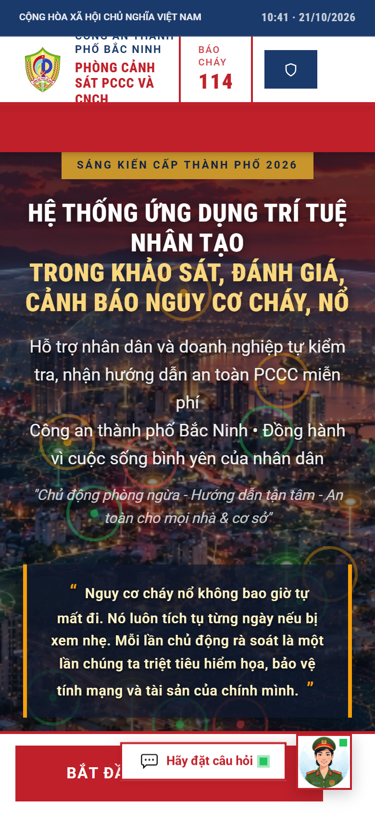
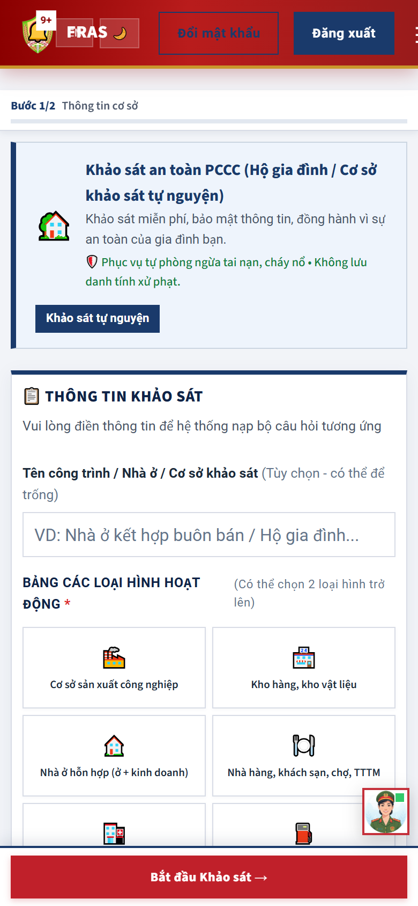
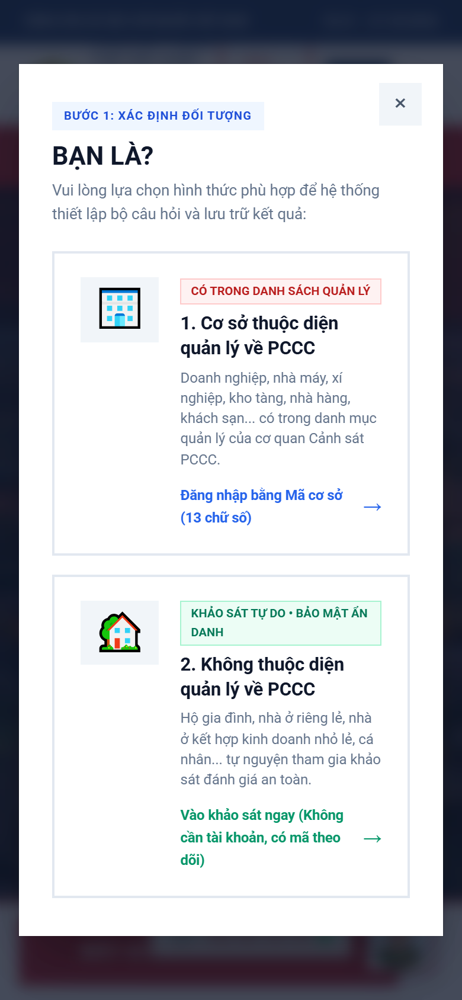
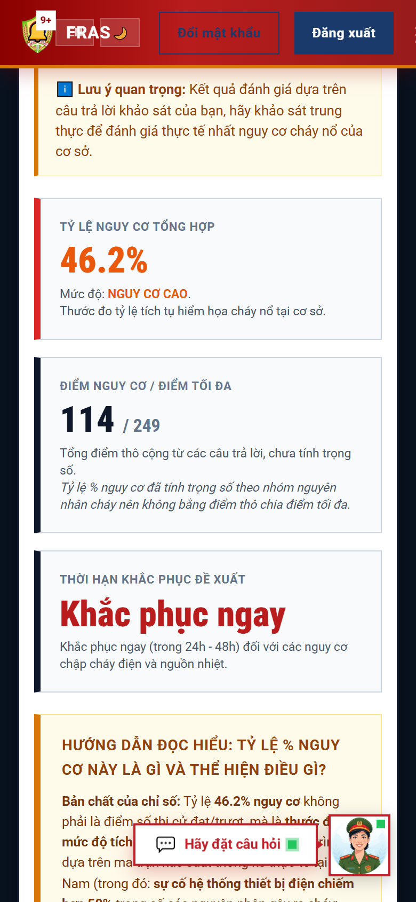
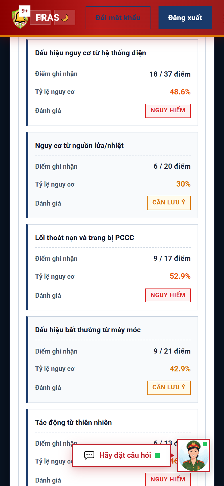
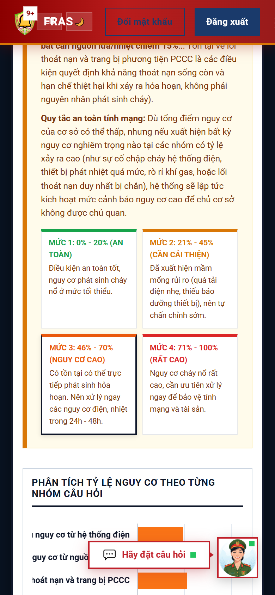
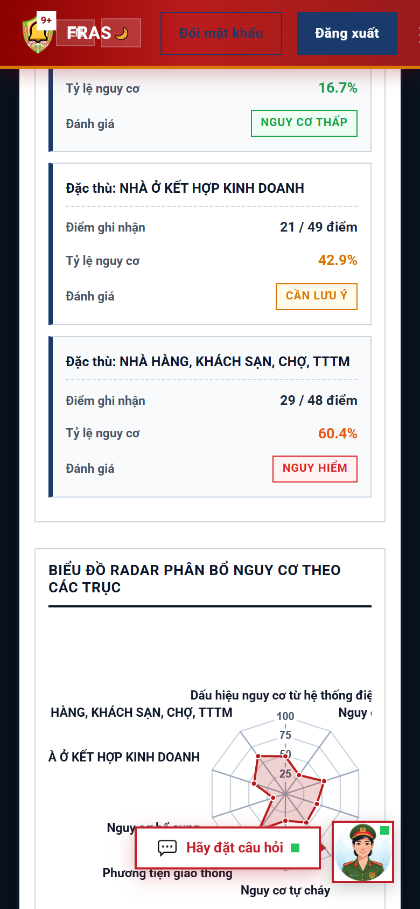
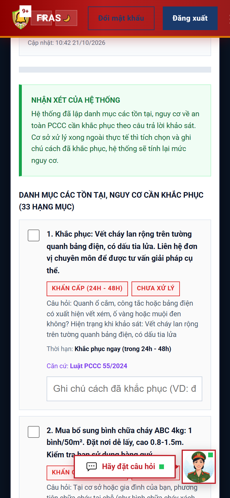
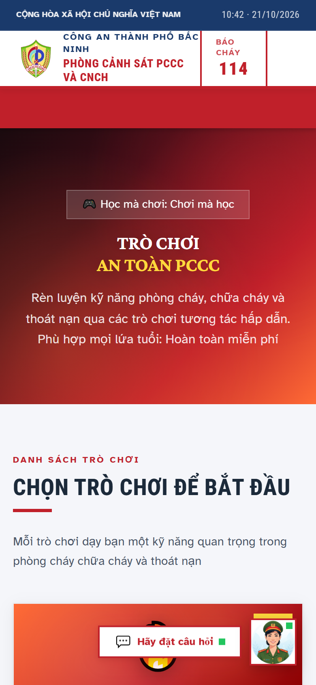

CÔNG AN THÀNH PHỐ BẮC NINH
PHÒNG CẢNH SÁT PCCC VÀ CNCH
Nếu ngay lúc này nhà bạn bốc khói,
bạn sẽ làm gì trong những phút đầu tiên?
bạn sẽ làm gì trong những phút đầu tiên?
Việc chuẩn bị chỉ cần vài chục phút,
ngay trên chiếc điện thoại của bạn.
ngay trên chiếc điện thoại của bạn.

CÔNG AN THÀNH PHỐ BẮC NINH GIỚI THIỆU
FRAS-AI
Ứng dụng trí tuệ nhân tạo trong khảo sát, đánh giá, cảnh báo và tự khắc phục nguy cơ cháy, nổ
📋
1. Khảo sát nguy cơtừng bước, ngay trên điện thoại
💬
2. Trợ lý ảogiải đáp pháp luật PCCC
🎓
3. Học liệu sốkhóa học trực tuyến
🎮
4. Trò chơi PCCChọc mà chơi, chơi mà học

PHẦN 1 · KHẢO SÁT NGUY CƠ
Bước 1: mở điện thoại, vào fras-ai.com
🏠 Nhà ở
🏪 Cửa hàng
🏭 Nhà xưởng
BẮT ĐẦU KHẢO SÁT →
Không cần cài đặt bất kỳ phần mềm nào

BƯỚC 2 · CHỌN ĐỐI TƯỢNG
Bạn là cơ sở quản lý, hay hộ gia đình?
🏢
Cơ sở thuộc diện quản lý PCCCNhập mã cơ sở 13 chữ số và mật khẩu do cơ quan Công an cung cấp
🏠
Hộ gia đình, nhà ở riêng lẻ, cửa hàng nhỏVào khảo sát ngay, không cần tạo tài khoản

BƯỚC 3 · KHAI THÔNG TIN CƠ SỞ
Chọn đúng loại hình hoạt động
🏠 Nhà ở kết hợp kinh doanh
🍽️ Nhà hàng, khách sạn
📦 Kho hàng
🏫 Trường học
⛽ Cửa hàng xăng dầu
🏭 Cơ sở sản xuất
Mỗi loại hình có một bộ câu hỏi riêng · chọn được nhiều loại hình
📍 Lấy vị trí hiện tại, để biết khoảng cách tới trụ nước chữa cháy gần nhất (không bắt buộc)

BƯỚC 4 · TRẢ LỜI CÁC CÂU HỎI
Câu hỏi chia theo từng nhóm
⚡ Hệ thống điện
🔥 Nguồn lửa, nguồn nhiệt
🚪 Lối thoát nạn, trang bị chữa cháy
⚙️ Máy móc, thiết bị
🌦️ Yếu tố tự nhiên
🚗 Phương tiện giao thông
🎯 Nhóm câu hỏi đặc thù theo loại hình của bạn
Mỗi câu chọn 1 trong 4 đáp án, từ an toàn đến cần lưu ý

LƯU Ý KHI TRẢ LỜI
Ba điều cần nhớ
1
Trả lời đúng thực tếĐây là công cụ giúp chính bạn, không phải bài kiểm tra
2
Có thể bấm Quay lại để sửaHệ thống tự lưu nháp, không lo mất dữ liệu khi bị gián đoạn
3
Chỉ mất khoảng 10 đến 15 phútNgắn gọn, dễ làm, làm lúc nào cũng được
BƯỚC 5 · KIỂM TRA LẠI VÀ GỬI
Xem lại một lượt, rồi bấm Gửi đánh giá
GỬI ĐÁNH GIÁ
✓
Chỉ sau ít phút, kết quả sẽ hiện ra

TRANG KẾT QUẢ
Mức nguy cơ hiện ra ngay
THẤPTRUNG BÌNHCAORẤT CAO
Điểm số từng nhóm và biểu đồ trực quan
Chỉ một nguy cơ đặc biệt cũng nâng mức chung, để không chủ quan
📄 Xuất file PDF, in biên bản để lưu hồ sơ


TRÍ TUỆ NHÂN TẠO PHÂN TÍCH
Nhận định cụ thể, bám sát câu trả lời của bạn
✅
Điểm bạn đang làm tốt
⏱️
Việc cần xử lý trước, kèm thời hạn
📝
Danh mục tự kiểm tra hằng ngày
30 ngày60 ngày90 ngàyLộ trình khắc phục


KHẢO SÁT CHỈ LÀ KHỞI ĐẦU
Theo dõi khắc phục: làm tới đâu, tích tới đó
☑ Thay ổ cắm, dây điện quá tải
☑ Dọn lối thoát nạn
☐ Bổ sung bình chữa cháy
Mức nguy cơtính lại ngay
Mã theo dõi: ABCD-EFGH-JKLưu lại để quay về trên bất kỳ thiết bị nào, không cần tài khoản


PHẦN 2 · TRỢ LÝ ẢO
Người hướng dẫn luôn sẵn sàng 24/7
Cơ sở của tôi cần chuẩn bị hồ sơ gì để được kiểm tra an toàn PCCC?
Bạn chuẩn bị theo từng bước sau: hồ sơ pháp lý của cơ sở, phương án chữa cháy, biên bản kiểm tra… (trả lời rõ ràng, từng bước)
Bao lâu thì có kết quả?
Không cần chờ giờ hành chính · không cần đi lại · hỏi bằng ngôn ngữ đời thường
SỨC MẠNH Ở NGUỒN TRI THỨC
Trả lời theo văn bản hiện hành, nêu rõ căn cứ pháp lý
📚 Luật, nghị định
📐 Quy chuẩn kỹ thuật
🧾 Tài liệu tập huấn
❓ Hàng trăm câu hỏi đáp thực tế
▼ đối chiếu · tra cứu thêm khi quy định thay đổi ▼
🤖
Trợ lý ảoNhớ nội dung vừa hỏi · hiểu tình hình cơ sở · gợi ý sẵn câu hỏi tiếp theo
Một người hướng dẫn pháp luật PCCC ngay trong túi áo của bạn
PHẦN 3 · HỌC LIỆU SỐ
Thư viện khóa học PCCC trực tuyến
Nhóm 1Kiến thức nền tảng và kỹ năng sống còn
Nhóm 2Kiến thức chuyên sâu và cộng đồng
🏘️ Thoát nạn khi cháy nhà ống
🔌 Sử dụng điện an toàn
🧯 Dùng bình chữa cháy xách tay
❤️ Sơ cứu ngừng hô hấp tuần hoàn
🌊 Phòng ngừa đuối nước
Đăng nhập nhanh bằng Zalo
Phù hợp gia đình, học sinh, tổ liên gia
TRÒ CHƠI PHÒNG CHÁY CHỮA CHÁY
Vừa chơi vừa nhớ kỹ năng cần thiết
🔥
Thoát khỏi đám cháytìm lối thoát nạn an toàn
❓
Đố vui kiến thức PCCCthi đua với thời gian, nhớ số 114
🔍
Tìm nguy cơ cháy nổ qua hình ảnhảnh do trí tuệ nhân tạo tạo ra


📋 Khảo sát để thấy rõ nguy cơ💬 Hỏi để làm đúng🎓 Học để biết cách ứng phó🎮 Chơi để nhớ lâu
FRAS-AI
fras-ai.com
Đồng hành cùng người dân và doanh nghiệp, vì một cộng đồng an toàn · Báo cháy 114
Nếu ngay lúc này nhà bạn bốc khói, bạn sẽ làm gì trong những phút đầu tiên?
Câu trả lời nằm ở những điều bạn đã biết và đã chuẩn bị từ trước.
Và bây giờ, việc chuẩn bị ấy chỉ cần vài chục phút, ngay trên chiếc điện thoại của bạn.
Công an thành phố Bắc Ninh giới thiệu Hệ thống FRAS-AI:
ứng dụng trí tuệ nhân tạo trong khảo sát, đánh giá, cảnh báo và tự khắc phục nguy cơ cháy, nổ.
Trong video này, chúng ta sẽ cùng đi qua bốn phần:
khảo sát nguy cơ từng bước, trợ lý ảo giải đáp pháp luật,
học liệu số và trò chơi phòng cháy chữa cháy.
Bắt đầu với phần quan trọng nhất: khảo sát nguy cơ.
Đây là bài tự kiểm tra giúp bạn nhìn thấy những điểm chưa an toàn trong ngôi nhà,
cửa hàng hay nhà xưởng của mình, trước khi sự cố xảy ra. Bước một:
mở trình duyệt trên điện thoại, Truy cập fras-ai.com, rồi bấm nút Bắt đầu khảo sát.
Không cần cài đặt bất cứ phần mềm nào.
Bước hai: chọn đối tượng.
Nếu là cơ sở thuộc diện quản lý về phòng cháy chữa cháy, bạn chọn mục thứ nhất,
nhập mã cơ sở mười ba chữ số và mật khẩu do cơ quan Công an cung cấp.
Nếu là hộ gia đình, nhà ở riêng lẻ hoặc cửa hàng nhỏ,
bạn chọn mục thứ hai và vào khảo sát ngay, không cần tạo tài khoản.
Bước ba: khai thông tin cơ sở.
Bạn nhập tên công trình, chọn địa chỉ, và quan trọng nhất là chọn đúng loại hình hoạt động.
Nhà ở kết hợp kinh doanh, nhà hàng khách sạn, kho hàng, trường học, cửa hàng xăng dầu,
mỗi loại hình sẽ có bộ câu hỏi riêng.
Nếu cơ sở hoạt động kết hợp, bạn có thể chọn nhiều loại hình cùng lúc.
Bạn cũng có thể bấm lấy vị trí hiện tại,
để hệ thống xác định khoảng cách tới trụ nước chữa cháy gần nhất.
Bước này không bắt buộc.
Bước bốn: trả lời các câu hỏi, chia thành từng nhóm.
Nhóm đầu tiên là hệ thống điện, nơi xảy ra nhiều vụ cháy nhất.
Tiếp theo là nguồn lửa, nguồn nhiệt, lối thoát nạn và trang bị chữa cháy, máy móc thiết bị,
các yếu tố tự nhiên, phương tiện giao thông,
và cuối cùng là nhóm câu hỏi đặc thù theo đúng loại hình của bạn.
Với mỗi câu, bạn chỉ cần chọn một trong bốn đáp án mô tả mức độ, từ an toàn đến cần lưu ý,
đáp án nào sát với thực tế nhất.
Có ba điều cần nhớ khi trả lời. Thứ nhất, hãy trả lời đúng thực tế, vì đây là công cụ giúp chính bạn,
không phải bài kiểm tra. Thứ hai, bạn có thể bấm Quay lại để sửa bất cứ lúc nào,
hệ thống tự động lưu nháp nên không lo mất dữ liệu nếu bị gián đoạn.
Thứ ba, toàn bộ bài khảo sát chỉ mất khoảng mười đến mười lăm phút.
Bước năm: kiểm tra lại và gửi. Hệ thống hiển thị tóm tắt thông tin cơ sở và kết quả từng nhóm câu hỏi.
Bạn xem lại một lượt, rồi bấm Gửi đánh giá.
Chỉ sau ít phút, kết quả sẽ hiện ra.
Trang kết quả cho bạn biết ngay tỷ lệ và mức nguy cơ:
thấp, trung bình, cao hoặc rất cao, cùng điểm số của từng nhóm và biểu đồ trực quan.
Chỉ cần một nguy cơ đặc biệt ở bất kỳ nhóm nào,
mức chung sẽ được nâng lên để bạn không chủ quan.
Bạn có thể xuất file PDF hoặc in biên bản để lưu hồ sơ.
Ngay bên dưới, trí tuệ nhân tạo đọc kết quả và đưa ra nhận định tổng quan,
những điểm bạn đang làm tốt, những việc cần xử lý trước kèm thời hạn cụ thể,
danh mục tự kiểm tra hằng ngày và lộ trình khắc phục ba mươi, sáu mươi, chín mươi ngày.
Mọi khuyến nghị đều cụ thể, dễ làm, bám sát đúng những gì bạn đã trả lời.
Khảo sát chỉ là khởi đầu. Khi xử lý xong từng hạng mục, bạn vào trang Theo dõi khắc phục,
tích chọn những việc đã làm và lưu tiến độ.
Hệ thống tính lại mức nguy cơ ngay lập tức,
và cơ quan Cảnh sát phòng cháy chữa cháy nắm được tình hình để hỗ trợ kịp thời.
Nếu bạn khảo sát không cần tài khoản, hãy lưu lại mã theo dõi hiện ngay sau khi gửi,
để quay lại bảng theo dõi trên bất kỳ thiết bị nào.
Phần thứ hai: trợ lý ảo, người hướng dẫn luôn sẵn sàng hai mươi bốn trên bảy.
Không cần chờ giờ hành chính, không cần đi lại,
bạn chỉ cần gõ câu hỏi bằng ngôn ngữ đời thường.
Cần chuẩn bị hồ sơ gì, trình tự ra sao, bao lâu có kết quả,
cơ sở của mình phải trang bị những gì, trợ lý ảo trả lời thẳng vào vấn đề, rõ ràng,
từng bước, dễ làm theo.
Sức mạnh của trợ lý ảo nằm ở nguồn tri thức phía sau.
Hệ thống đối chiếu câu hỏi của bạn với kho văn bản pháp luật về phòng cháy chữa cháy:
luật, nghị định, quy chuẩn kỹ thuật, tài liệu tập huấn và hàng trăm câu hỏi đáp thực tế.
Khi quy định vừa thay đổi, trợ lý còn tra cứu thêm thông tin mới để trả lời theo đúng văn bản hiện hành.
Trợ lý nhớ nội dung bạn vừa hỏi để trả lời tiếp mạch lạc,
hiểu tình hình cơ sở để tư vấn sát hơn,
nêu rõ căn cứ pháp lý và gợi ý sẵn những câu hỏi tiếp theo.
Một người hướng dẫn pháp luật phòng cháy chữa cháy, ngay trong túi áo của bạn.
Phần thứ ba: học liệu số.
Chỉ một chạm, hệ thống đưa bạn đến thư viện khóa học phòng cháy chữa cháy trực tuyến,
nơi bạn học theo nhịp của riêng mình ngay trên điện thoại và đăng nhập nhanh bằng Zalo.
Các học phần chia thành hai nhóm:
kiến thức nền tảng và kỹ năng sống còn, rồi kiến thức chuyên sâu và cộng đồng.
Bạn có thể học cách thoát nạn khi cháy ở nhà ống, sử dụng điện an toàn,
dùng bình chữa cháy xách tay, sơ cứu người ngừng hô hấp, tuần hoàn,
hay phòng ngừa đuối nước. Nội dung phù hợp với cả gia đình, học sinh và các tổ liên gia.
Cuối cùng là phần thư giãn: trò chơi phòng cháy chữa cháy.
Ba trò chơi ngắn, mỗi lượt chỉ vài phút:
thoát khỏi đám cháy, đố vui kiến thức và tìm nguy cơ cháy nổ qua hình ảnh do trí tuệ nhân tạo tạo ra.
Vừa chơi vừa nhớ những kỹ năng cần thiết.
Khảo sát để thấy rõ nguy cơ, hỏi để làm đúng, học để biết cách ứng phó, chơi để nhớ lâu.
Tất cả trong Hệ thống FRAS-AI, đồng hành cùng người dân và doanh nghiệp,
vì một cộng đồng an toàn. Truy cập fras-ai.com ngay hôm nay.